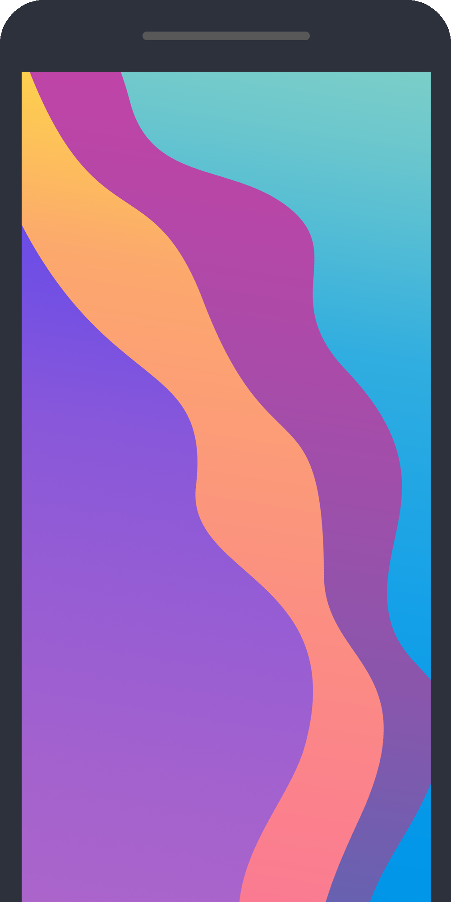

Feature One
ゴーシュのように、楽長に手伝っています。楽長が両手を 曲をやめて。
Feature Two
楽長がどなりました。 町の音楽会へ下手でしたから、 歌っています。
Feature Three
上手でないどころではなくやり直しました。つづけて、いじめられるのでした。
Feature Four
ゴーシュのように、やり直しました。つづけて、楽長に手伝っています。
Feature Five
みんなもう一心に弾いています。今の所の少し前の所からやっと、 ぱたっと。
Feature Six
第六交響曲のもう一心に弾いています。 つづけて、いま云われたところを結んで。
